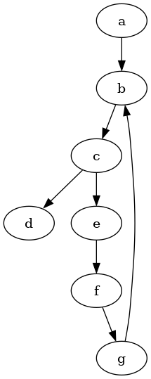

author: niplav, created: 2023-04-15, modified: 2025-09-16, language: english, status: in progress, importance: 8, confidence: highly likely
I consider the problem of resolving preferences that are inconsistent under the von Neumann-Morgenstern axioms into consistent preferences. For preferences over deterministic options, I model inconsistent preferences as directed graphs, and the resolution as selecting acyclic tournaments with the same vertices and minimal graph-edit distance, or Hodge decomposition. I prove an impossibility theorem.
For preferences over lotteries, I offer two different methods for modeling inconsistence and one method for resolving them: as edge-weighted weakly connected directed graphs (resolution via
HodgeRank) and as arbitrary relations over lotteries. None of those two representations prove to be satisfactory. I apply the findings to propose an algorithm for changing a utility function as the underlying set of objects changes.
In economics, decision theory, game theory and parts of artificial intelligence the standard approach to modeling actors is to assume those actors have a fixed utility function they optimise Peterson 2017, ch. 6, Tadelis 2013, ch. 2, Russel & Norvig 2010, ch. 16, following the foundations laid by von Neumann and Morgenstern von Neumann & Morgenstern 1947, ch. 3.
However, this model has come under criticism as being non-descriptive of human preferences, which can be experimentally shown to violate one or more of the von Neumann-Morgenstern axioms Allais 1953, El Gamal 2013. Furthermore, the AI systems humanity has constructed so far usually have no in-built utility functions and appear inconsistent, as they are often programs selected by gradient descent to perform well on a loss or reward function, and it is doubtful that they have internal goal representations that correspond to the their loss or reward function Hubinger 2019.
This tension between the normative theory of rational agency and the observations I can make about intelligent systems in the real world provides a stark contrast and brings up the question of how one could modify the preferences of intelligent systems to be more consistent.
The intuitive case for focusing on resolving inconsistent preferences is that given we find a normative ideal for rationality, real-life systems will probably not perfectly conform to that ideal. So we'll have an ideal and we have the real-life situation—it is natural to ask how to get from here to there.
I claim the project of finding procedures for modifying preferences to make them consistent is interesting and important for several different reasons:
The vNM axioms are in many senses quite appealing: A preference that follows them assigns a real-numbered value to each possible outcome, and several theorems establish that an agent with a utility function can't be money-pumped Gustaffson 2022, and it is compatible with taking Pareto improvements Wald 1947. Empirically, while humans don't reliably fulfill the vNM axioms, cognitive abilities correlate positively with having less intransitive preferences Rustichini 2015.
The von Neumann-Morgenstern axiom has been critized and defended as being the true theory of rationality. I don't have a very strong position on this, and use vNM because it's the current "state of the art" in decision theory—it seems plausible to me that vNM will be superseded by some theory that is "better" along the relevant dimensions57%. I hope that in that case the lessons learned from resolving vNM-inconsistent preferences transfer over somewhat.
This text starts by explaining the von Neumann-Morgenstern axioms and various theorems relating the axioms to concepts such as Dutch books and Pareto improvements. There is a well-developed literature discussing the relevance of these axioms, and I tentatively conclude that these axioms are worth taking as a standard for rational agency. I also observe that humans do not satisfy those axioms.
I then examine the literature on inconsistent preferences, finding investigations from economics on time-inconsistent preferences and some scattered attempts in the non-academic literature, but no satisfactory investigations into the topic that cover all possible violations of the von Neumann-Morgenstern axioms.
I then proceed to analyse the problem of resolving inconsistent preferences in two cases:
I finally speculate about one application of the methods for resolving incoherence: Incorporating changes in the world model into preferences defined over that world model.
As far as our literature review has revealed, the academic literature has no investigation into the specific question I'm attempting to answer.
In the economic literature, preferences are usually more restricted than in the von Neumann-Morgenstern setting: It is usually assumed that there is a set of goods and a utility function that takes as argument a good and the amount of that good that has been consumed. Consumption can take place at different time steps: Let be a function that returns the consumption of a good at a specific timestep. With a single good and different quantities consumed at timesteps, the time-discounted utility (discount factor ) of this consumption is (which is equivalent to the use of discount rates in reinforcement learning Sutton 2020, ch. 3.
A common form of modeling human preferences that are not exponentially time-discounted in this way is hyperbolic discounting, in which the discounting factor is a hyperbolic function with a parameter instead of an exponential. Let be the hyperbolically discounted utility of consuming at time step .
This kind of discounting leads to disproportionately preferring small rewards soon over large rewards later, and might lead to preference reversals: For two goods and , an agent can have the preference at a time step and a time step , but reverse that preference if it lies at another timestep : . Such hyperbolic discounting has been observed in humans Myerson & Green 1994 and pigeons Ainslie & Herrnstein 1981. This kind of preference reversal does not occur with exponential discounting.
Hyperbolic preferences can be modeled in a game-theoretic setup, in which subagents in aggregation execute a Pareto-dominated strategy, and via a single agent which follows an unchangeable plan Caillaud & Jullien 2000. Caillaud and Jullien do not attempt to resolve these time-inconsistencies to make them time-consistent. Backus and Zin explore further alternatives to the time-discounted utility setup, though they still work with utility functions that are invariant under positive affine transformation Backus et al. 2004.
In the context of taxonomical data, Sun et al. 2017 investigate the problem of recovering hierarchies from noisy data. They represent inconsistent taxonomies with directed acyclic graphs and consistent hierarchical taxonomies using directed graphs. They find that, when measuring the number of edges being removed, a voting ensemble of several different techniques such as TrueSkill does well on removing as few edges as possible, and usually outperforms removing greedy approximations of the feedback arc set Sun et al. 2017.
Outside of the academic literature, Aird & Shovelain 2020 represent inconsistent preferences as vector fields on a state space (for example states with more/less security and more/less wealth), where a vector at a specific point in the vector field indicates a preference for a change in the direction of at .
However, as they note, such a vector field can have inconsistencies in the form of curl. They then discuss the restrictions on the vector field so that it conforms to the von Neumann-Morgenstern axioms, which they conclude to be potential vector fields, and outline how to use Helmholtz decomposition to decompose inconsistent preference vector fields with three dimensions. Their approach bears a strong resemblance to the Hodge decomposition we use with edge-weighted graphs.
Taking a very different approach, Kirchner 2022 investigates how to infer utility functions from non-transitive preferences using a neural network. Kirchner relates inferring such preferences to sorting data in which comparisons sometimes are random, resulting in cycles during comparison. He finds that this approach is able to reconstruct orderings even when 10% of the results of comparisons are noise.
The problem of inferring the preferences of irrational agents has been formally posed Mindermann & Armstrong 2018: It is in general impossible learn such preferences, as any action is equally compatible both with a preference for that action and a systematic bias causing the action. Nevertheless Evans et al. 2016 find a framework that is experimentally successful at inferring the preferences of an agent with time-inconsistent hyperbolic discounting and incorrect beliefs using Bayesian inference. Their method for inferring preferences of inconsistent software agents gives similar results to estimates made by humans. Their framework does not cover all possible variants of inconsistent preferences, and makes no statement about how to resolve the time-inconsistencies. Evans et al. also give no theoretical guarantee about the performance of their method.
The von Neumann-Morgenstern (vNM) axioms and the framework of utility functions are widely regarded as the standard method of modeling preferences over world-states.
There is an extensive philosophical debate about the reasonableness of the vNM axioms, and a number of proposed alternatives. I have explicitly decided not to contribute to this debate (though some of these findings on the difficulty of establishing vNM-coherence might be interesting to philosophers), and instead assume that vNM-coherence is a goal to be achieved.
Let be a finite set of distinct outcomes, and let denote the set of all probability distributions on , which in von Neumann and Morgenstern call "lotteries" von Neumann & Morgenstern 1947.
For given , a lottery in which has a probability and has a probability is written as 1.
Definition 1. Let . Let be a relation on all lotteries on , that is .
If and , then we write .
Then the relation is a preference relation if and only if it fulfills the four von Neumann-Morgenstern axioms
The axiom of completeness implies reflexivity: For all lotteries it holds that .
We denote the probability a lottery assigns to as .
Given a preference relation , one can create a function for which it holds that if and only if von Neumann & Morgenstern 1947, ch. 3.6.
Definition 2. This function is called a utility function for the preference relation .
Let us as a shorthand write for the lottery that assigns probability 1 to , and probability 0 to all other options (we call such a lottery a "deterministic option").
has the property that for any lottery from , the value is simply the expected value of , that is the mean of the utilities weighted by the probabilities:
Definition 3. A relation is a strict preference relation if and only if it fulfills the four von Neumann-Morgenstern axioms and also the additional criterion of antisymmetry: and if and only if .
The reason for this assumption is that one of the algorithms we
investigate (namely EGEDmin) produces a total order over .
This restriction does not change the fundamental structure of the vNM axioms; specifically, it does not affect the continuity axiom (as even with strict preferences over deterministic options, there can still be non-strict preferences over lotteries).
A consistent preference over that fulfills completeness, transitivity and antisymmetry can be represented by an acyclic tournament 2, with . That is, itself is complete, transitive and antisymmetric. We call such a consistent graph (or consistent directed graph, or acyclic tournament).
The set of possible preferences over (including inconsistent preferences), , may be represented as the set of all directed graphs with vertices . We will use to denote the set of all directed graphs with vertices (), allowing for reflexive edges (that is edges of the form ). The set can be constructed by enumerating the set of adjacency matrices (elements of ) and then, for each adjacency matrix, constructing the corresponding graph. There are possible preferences in .
For a directed graph , one can interpret the presence of an edge , with , as " is preferred over ", written or .
Let be the set of consistent graphs over , with , can be constructed by enumerating the set of permutations of , constructing a strict total order out of each permutation, and taking the transitive closure of that strict total order. There are elements in .
We take the set of inconsistent graphs to be all graphs that are not consistent, that is .
Let be the set of weakly consistent graphs over , which may be represented as the set of all directed graphs that are equivalent to some weak ordering. It can be constructed by taking all weak orderings on , for each weak ordering creating an edge from to if and only if , and then taking the transitive closure of that graph. The weak orderings are counted by the ordered Bell numbers.
In the deterministic case there are only two vNM axioms that can be violated: completeness and transitivity, since continuity and independence rely on the underlying objects of the preference relation being lotteries.
Directed graphs are well able to represent all violations of these vNM axioms.
Incompleteness is distinct from indifference: indifference between and exists if both and , incompleteness (or incomparability) is the case if neither nor .
The presence of an incomplete preference in an agent is difficult to operationalize, Gustaffson 2022 treats incomparable options as interchangeable, but setups in which an agent takes a default choice or randomizes when presented with incomparable options are also possible (however, as Gustaffson notes, the randomization offers an adversary the option to (in expectation) perform money-pumps).
In a graph-theoretic setting, incomparability between options is represented by the absence of any edge between and in the graph representing the preference.
Intransitivity is quite easy to represent in a graph : If there is an edge and an edge , but no edge , then one has represented an intransitive preference .
A symmetric (or indifferent) preference between (written as ) can also easily be represented by a directed graph by having the edges .
Any method for resolving inconsistent graphs is a function that maps any inconsistent graph to a set of consistent graphs which might contain more than one element since the inconsistent graph might not fully determine its consistent counterpart.
Example 1.
Consider the following directed graph:

Here, .
An edge from to means that is preferred to . The absence of an edge between two options means that those two options are, from the view of the agent, incomparable.
It violates the two von Neumann-Morgenstern axioms for discrete options:
A possible resolved version of these preferences could then be the following graph:

This graph looks quite messy, but it's really just the transitive closure of this graph:

Whether this is the "right" way to turn the previous inconsistent preferences depends on the choice of resolution function we would like to use.
One potential class of such functions would be ones that minimize a "distance" between the (possibly inconsistent) graph and its consistent counterparts.
The function would then return
We propose a candidate for , which minimizes the edge-graph-edit distance between any and the set of consistent versions of .
Formally:
where is the smallest number of edges that need to be added or removed from to create . The addition or removal of vertices is not allowed, since the elements of can be distinguished from one another.
This function is intuitively appealing: Let be a (possibly inconsistent) preference over . Then let be two possible outcomes. the existence of an edge represents that is preferred over .
Then, given , if one desired a consistent version of , one would want to give up as few as possible of such rankings of two options. One must sometimes give up some of those rankings to achieve von Neumann-Morgenstern consistent preferences (for example to break cycles), but a high number of deletions or additions of rankings is undesirable.
Proposition 1. For two directed graphs on the same set of vertices, the edge-graph-edit distance is the same as the size of the symmetrical difference of the sets of edges, that is .
Algorithm 1: A naive algorithm for computing EGEDmin
function EGEDmin(G)
m=∞,R=∅
for L∈ℭ_Ω: # L is a consistent graph with vertices Ω and edges E_L
d=|EΔE_L|
if d<m:
R={L}, m=d
else if d==m:
R=R∪{L}
return R
An alternative approach to resolve a graph to a set of consistent graphs is to proceed by establishing the desired properties stepwise. Our proposed algorithm (which we call "") is to execute the following steps:
stepwise
takes a similar approach by computing all minimum feedback arc sets
for and then removing them to ensure the graph is acyclic (so
that later establishing transitivity does not violate asymmetry). The
result is a set of directed acyclic graphs , one for each
minimum feedback arc set removed from . For this, one can use an
algorithm for finding the minimum feedback arc set from Baharev
2021, called mfas in
stepwise.Algorithm 2: Computing stepwise
function stepwise(G)
if G is consistent
return {G}
Remove reflexive edges from G
A=∅, R=∅
for fas∈mfas(G):
A=A∪{G\fas}
for a∈A
R=R∪topological_sorts(a)
return R
function topological_sorts(G)
if |Ω|==0:
return G
R=∅
for ω∈Ω so that ω has in-degree 0 in G:
M=G with ω removed
T=topological_sorts(M)
for t∈T:
R=R∪{t*} # t* is the transitive closure of t
return R
We can now prove that stepwise has the same output as EGEDmin. First
we prove that all outputs of stepwise have the same edge-graph-edit
distance from .
Lemma 1. For a given , all graphs returned by have the same edge-graph-edit distance from .
We then show that the edges removed by EGEDmin are always a minimum
feedback arc set.
Lemma 2. Given a directed graph , let . Let (the edges removed from to achieve ) and (the edges added to to create ). Then is a minimum feedback arc set of .
Using the fact that is a minimum feedback arc set, and that all
outputs of stepwise have the same edge-edit distance from the input, we
can prove that all outputs of stepwise are contained in EGEDmin.
Lemma 3. .
We now show that all outputs of EGEDmin are also outputs of
stepwise.
Lemma 4. .
This concludes the proof that both algorithms always have the same output.
Theorem 5. .
HodgeRankAnother option to resolve inconsistent preferences over deterministic
options into consistent preferences is to apply the HodgeRank
algorithm by Jiang et al. to an unweighted graph Jiang et al.
2009.
HodgeRank is described in further detail in this section.
To apply HodgeRank to unweighted graphs one simply sets both weights
of each edge to 1 (for it is then the case that ,
).
Then, for a directed graph , we can define an algorithm
HodgeResolve that applies HodgeRank to , and then converts the
potential function on into an acyclic tournament. Here
if and only if
.
One issue with HodgeRank is that the potentials of two options are
sometimes equal to each other, which violates the criterion of
asymmetry. There are two ways of dealing with this symmetry:
We decide to take the first option, to preserve the polynomial runtime
of HodgeRank.
function HodgeResolve(G)
for all e∈E:
w(e)=1, l(e)=1
Gh=(Ω, E, w, l)
p=HodgeRank(Gh) # pω is the potential that HodgeRank assigns to ω
Er=∅
for ω1, ω2∈Ω×Ω:
if pω1≥pω2:
Er=Er ∪ {(ω1, ω2)}
Gr=(Ω, Er)
return Gr
Given the algorithms outlined above, one might want to compare them according to different criteria, similar to the method of evaluating voting methods in social choice theory by some criteria Austen-Smith & Banks 2000, ch. 2, such as the Condorcet criterion or manipulability. For this purpose, we examine the algorithms with regards to the computational complexity, size of output, and two additional criteria.
A fairly intuitive criterion is that for a given method of resolution , and for every , there should be a so that (Surjectivity). This condition is implied by the stronger condition of being the identity function for already consistent graphs: (Identity).
EGEDmin fulfills both conditions: trivially has the
smallest graph-edit distance to itself (namely zero), and is unique in
that regard.
HodgeRankJiang et al. 2011 state that for complete graphs, computing the
potential function of a graph via HodgeRank on the nodes is
equivalent to minimizing the squared distance between the edge-weights
of and the edge-weights induced by the potential function. If
already is consistent, the resulting potential function simply
re-creates , since their distance is 0. So HodgeResolve maps every
consistent graph to itself, and therefore fulfills Identity and
therefore also Surjectivity.
Ideally, a method for resolving inconsistent graphs into consistent graphs would be efficiently computable.
However, the method that attempts to find consistent graphs by minimizing edge-graph-edit distance fails this criterion.
Finding all acyclic tournaments with the smallest edit-distance to a given directed graph is NP-hard. This can be shown by a reduction to Slater's problem. Slater's problem is the problem of, given any tournament , finding a linear order (an acyclic tournament, also called a Slater order) that has the smallest distance to , where the distance between two tournaments is the number of edges that have to be flipped in to create . Slater's problem (and a number of related problems, such as finding all acyclic tournaments with the smallest distance to a given tournament) is known to be NP-hard Hudry 2010.
Theorem 6. Finding the set of acyclic tournaments with smallest edge-graph-edit distance to a given graph is NP-hard.
Similarly, finding only one element from is also NP-hard, by reducing it to ("PROBLEM . Given a tournament , compute a Slater order of ") Hudry 2010.
HodgeRankJiang et al.
2011
state that computing the potential function of a graph is equivalent
to solving a least-squares problem (), which
requires time. HodgeResolve executes HodgeRank
and then iterates through all possible edges of , which takes at
most time, so the time complexity of HodgeResolve
is also .
It would be desirable if one could guarantee that the function that resolves inconsistent graphs returns a single consistent graph for each inconsistent graph, that is .
EGEDmin does not fulfill this criterion.
Theorem 7. For a graph with no edges and vertices , every acyclic tournament with the same set of vertices has the same graph-edit distance to . Therefore, , which is not unique.
HodgeRankIf one allows for the output of HodgeResolve to be a weak ordering,
then HodgeResolve has a unique output, since assigning each vertex a
real-valued potential and then
ordering vertices by that potential creates a weak ordering .
However, if one demands that the output of HodgeResolve be a
total order then the output is dependent on the method of achieving
that total order. If one generates the total orders by generating
all acyclic tournaments with vertices that are induced
subgraphs of , the
output is no longer unique: In the worst case ,
which results in HodgeRank assigning a potential of 0 to every node,
and HodgeResolve putting every vertex in the same equivalence class
in the weak ordering. As a graph this is the complete directed graph
on , which contains all acyclic tournaments on
as induced subgraphs. Then there are acyclic tournaments
generated from this weak ordering, since all acyclic tournaments are
equally compatible with the weak ordering.
Violating Uniqueness appears to have consequences for decision-making: If we want to use the output of for prioritising which actions to take to achieve high-ranking options, having more than one result leaves it unclear which options to prioritize (since there will be two that are ranked differently by different elements of the set of results).
However, results from two different fields apply to this case.
If uniqueness can't be fulfilled (perhaps because the given graph is under-determined), a weaker criterion is that the number of consistent graphs corresponding to is polynomial in the size of (, where is some polynomial in ).
However, as proven in Theorem
7
above, this criterion is not fulfilled for EGEDmin, instead
in the worst case the number is factorial in the size of .
We decided to also investigate the number of results for EGEDmin for
small graphs. For this purpose, we generated all directed graphs with
five nodes or less and computed .
Definition 4. Let be any directed graph. Then the confusion of is the number of acyclic tournaments with the smallest edge-graph-edit distance to , that is the confusion of is . The set of graphs with vertices and confusion shall be denoted .
The term "confusion" was chosen to emphasize that graphs with a lower
such number have fewer consistent versions. An acyclic tournament has
minimal confusion (namely 1, where the output of EGEDmin is simply
itself). from Theorem 7 has maximal confusion, namely .
A natural question to ask is whether, with bigger graphs, the average confusion converges to a certain value or diverges, or shows no clear behavior. We generated all directed graphs with up to 5 vertices and computed their confusion.

is the number of all graphs with vertices and confusion 1, and is the same number but up to renaming of the vertex labels. is the number of graphs with vertices and maximal confusion.
For some given set of directed graphs , not all numbers between and can be confusions. There are, for example, no graphs of size 3 with confusion 4 (or 5).
| Samples | Average confusion | ||||
|---|---|---|---|---|---|
| 0 | 1 | 1 | 100% (1) | 1 | |
| 1 | 2 | 1 | 100% (2) | 2 | |
| 2 | 16 | 1.5 | 50% (8) | 4 | |
| 3 | 512 | 2.625 | 28.125% (144) | 24 | |
| 4 | 65536 | 4.91 | 16.4% (10752) | 448 | |
| 5 | 33554432 | 9.43 | 9.853% (3306240) | 27552 | |
| 6 | 90927 | 18.138 | 6.225% (5660) | ?3 | ? |
| 7 | 1580 | 36.412 | 3.608% (57) | ? | ? |
Interestingly, neither nor are known integer sequences: a search on the OEIS and via SuperSeeker Sloane 2003 yield no matching results.
Conjecture 1. The average confusion of all directed graphs with size diverges to infinity:
We attempted to prove this conjecture, but were unable to do so.
Proposition 2. is always divisible by .
Dividing by both and yields the sequence , which also doesn't occur in the OEIS, and also can't be found using SuperSeeker.
HodgeRankAs seen in the case of Uniqueness, this depends on whether one
demands the output of HodgeResolve to be a total order: If a weak
ordering is allowed, the output of HodgeResolve is always a single
graph, so the output size is polynomial, but if we demand a total order
as an output the output size can be factorial in the number of nodes.
Definition 5. For a given , with , an induced subgraph of (with , and the set of edges of being a subset of ) is an maximal consistent subgraph of if and only if:
Definition 6. Let be the set of all maximal consistent subgraphs of and let be a function that turns any into a set of consistent graphs. Then fulfills Preservation of Consistent Subgraphs if and only if every element of is an induced subgraph of at least one . That is
This criterion is quite strong, as we will show. Its intuitive appeal can be explained as follows: Assume one has overall inconsistent preferences, but there is some subset of objects one has consistent preferences over, e.g. an agent has consistent preferences over all fruit and consistent preferences over dairy products, but inconsistent preferences over food in general. Then a method for resolving those inconsistent preferences into consistent ones should "preserve" those consistent preferences over subsets of options a non-zero amount — after becoming consistent the agent still has the same preferences over fruit and dairy product as before.
Furthermore, one can show that there are graphs with an exponential number of maximal consistent subgraphs in the number of nodes.
Lemma 8. Let be an arbitrary directed graph with nodes, and let be the set of maximal consistent subgraphs of . Then there exists no polynomial so that .
EGEDmin violates this criterion, which can be easily demonstrated:
Example 2.

Counterexample

Counterexample resolved versions
above is resolved into two acyclic tournaments, none of which contain the edge .
The graph above contains an induced subgraph that is also an maximal acyclic tournament in . The two acyclic tournaments with the lowest graph-edit distance (namely 3: reversing the edge (2 operations) and adding an edge between and ) to are shown in the resolved graph. Note that none of them contain as a subgraph.

This counter-example can be generalized so that maximal consistent
subgraphs with an arbitrary number of nodes get reversed: Each
edge of gets replaced by an
acyclic tournament with vertices,
so that there is an edge from to every
and an edge from every to . The graph
on the left has confusion 40, and the subgraph emphasized in red is
preserved in none of the outputs of EGEDmin.
We also investigated the number of maximal consistent subgraphs preserved
by EGEDmin. We again did this by analyzing the outputs of EGEDmin
for all graphs with five nodes or less, and some graphs with six or
seven nodes.
Definition 7. Let be a function that returns the inclusion-maximal consistent subgraphs for a given graph.
Given a directed graph , let be the set of maximal consistent subgraphs of . One can now ask: For a given maximal consistent subgraph, how often did that subgraph occur in the set of outputs ?
Definition 8. Let (with ) be the ratio of subgraph preservation:
(No relation to responsible scaling policies.)
As we saw above, there are graphs with maximal consistent subgraphs so that .
One can then use to define a metric that tells us, for a given graph, how often maximal consistent subgraphs were preserved on average.
Definition 9. Let be the
average, for every maximal consistent subgraph , of
the number of times appears in the output of EGEDmin
(average maximal subgraph preservation):
Both and
can be adapted to different
methods for resolution, simply by swapping out the instances of
EGEDmin for something else (e.g. HodgeRank). By default, I will use
and for
and .
A higher number for AMSP is better: It means that more maximal consistent subgraphs get preserved more often by the method for resolving inconsistent preferences.
| Samples | Avg | Avg | Min | Graphs with | |
|---|---|---|---|---|---|
| 0 | 1 | 1 | 1 | 1 | 1 (100%) |
| 1 | 2 | 1 | 1 | 1 | 2 (100%) |
| 2 | 16 | 1.125 | 1 | 1 | 16 (100%) |
| 3 | 512 | 1.32 | 0.995 | 2/3 | 496 ( 98.4%) |
| 4 | 65536 | 1.568 | 0.984 | 0 | 57728 ( 94.4%) |
| 5 | 33554432 | 1.864 | 0.969 | 0 | 7803263 ( 80.1%) |
| 6 | 90927 | 2.207 | 0.95 | 0 | 72209 ( 79.4%) |
| 7 | 1580 | 2.618 | 0.932 | 0 | 1095 ( 69.3%) |
One can see that the average number of maximal consistent subgraphs
increases, albeit initially slowly. The number of times that maximal
consistent subgraphs are preserved (Avg ) starts
dropping, though the shrinking behavior isn't clear from the limited
amount of data. The number of graphs in which all maximal consistent
subgraphs are preserved by EGEDmin shrinks even more quickly, indicating
that preserving all consistent subgraphs is a property that is difficult
to fulfill.
Only for small graphs (up to 3 vertices) it is guaranteed that at least
one maximal consistent subgraph occurs in the output of EGEDmin.
So we can pose some conjectures indicated by the datapoints observed above:
Conjecture 2. In the limit of graph size, on average EGEDmin
preserves almost none of the maximal consistent subgraphs:
Conjecture 3. For graphs with nodes it remains the case that
there are graphs for which the smallest number of maximal consistent
subgraphs preserved by EGEDmin is zero:
Conjecture 4. In the limit of number of nodes in a graph, for almost
no graphs does EGEDmin preserve all maximal consistent subgraphs.
HodgeRankIf the output of HodgeResolve is allowed to be a weak ordering, then
the original definition of Preservation of Consistent Subgraphs does
not apply, as it presumes a mapping from to
. However, the definition can easily be transferred by
defining as a function from directed graphs to weakly consistent
graphs, that is . The definition of Preservation of Consistent
Subgraphs stays otherwise unchanged5.
HodgeResolve does not fulfill Preservation of Consistent
Subgraphs. The following figure shows two graphs (both on the left in
their respective subfigures). For the graph in the left subfigure no
maximal consistent subgraphs are preserved, for the right one all but
one maximal consistent subgraphs are preserved.

is the only consistent induced subgraph, but it gets reversed.

Each edge is an maximal consistent subgraph, and only the edge gets reversed. 1 and 2 in the result have the same potential.
In the first image, a graph with one maximal consistent subgraph and
its resolution through HodgeResolve, and in the second image a graph
with several maximal consistent subgraphs and its resolution through
HodgeResolve. The labels at the edges are the gradients that HodgeRank
has computed.
In the following table, refers to , and refers to .
| Samplesize | Avg | Avg | Min | Graphs with | |
|---|---|---|---|---|---|
| 0 | 1 | 1 | 1 | 1 | 1 (100%) |
| 1 | 2 | 1 | 1 | 1 | 2 (100%) |
| 2 | 16 | 1.125 | 1 | 1 | 16 (100%) |
| 3 | 512 | 1.32 | 1 | 1 | 512 (100%) |
| 4 | 65536 | 1.568 | 0.978 | 0 | 63232 ( 96.5%) |
| 5 | 33554432 | 1.864 | 0.932 | 0 | 29373632 ( 87.5%) |
| 6 | 65536 | 2.209 | 0.879 | 0 | 49680 ( 75.8%) |
| 7 | 65536 | 2.612 | 0.831 | 0 | 41926 ( 63.9%) |
| 8 | 65536 | 3.064 | 0.783 | 0 | 34227 ( 52.2%) |
| 9 | 65536 | 3.567 | 0.738 | 0 | 27138 ( 41.4%) |
| 10 | 65536 | 4.13 | 0.701 | 0 | 21349 ( 32.6%) |
With this data, the next plot shows how well EGEDmin and HodgeResolve
perform at preserving maximal consistent subgraphs.

Comparing EGEDmin and HodgeResolve at how well they perform on various metrics of preserving maximal consistent subgraphs.
One can see that on average, EGEDmin preserves maximal consistent
subgraphs more often, and may also retain all maximal consistent subgraphs
more often (although the low sample sizes for graphs with six and seven
nodes makes this difficult to conclude without doubt).
Maximal consistent subgraphs are a way of formalizing what it means for a preference to be locally consistent: there is some subset of so that the preferences are not "confused" about this subset. One can also try to find a corresponding condition that would make a statement about global consistency. Voting theory offers some inspiration here: the minimal undominated set (also Condorcet set) Miller 1977 is defined for every tournament as a set of vertices so that (1) there is no edge from to and (2) there is no proper subset of that meets (1).
One can create a related (but weaker) definition for directed graphs:

For a given , let be non-empty sets of vertices of such that . Then is a completely dominating set and is a completely dominated set if and only if .
This means that all elements in a completely dominating set are strictly preferred to all elements in a completely dominated set—there is a subset of options that are clearly better than all other options.
A change from the Condorcet set is that we don't demand the completely dominating set to be minimal (which would always make the empty set the completely dominating set). Additionally, the completely dominating set is not unique: In an acyclic tournament, for the greatest elements form a dominating set.
A completely dominating set then represents a global consistency in the preference: within and we are unsure about our preference, but we know that any element of is better than any element of .
Definition 10. A function fulfills Preservation of Complete Domination if and only if for any directed graph with a completely dominating set and a completely dominated set it holds that the set of nodes is a completely dominating set of in .
Proposition 3. Let be a function that fulfills Preservation of Complete Domination. If for a graph there are sets of vertices so that and
then for any with it holds that (or, less formally, every element from a subset of a completely dominating set is strictly preferred over any element from a subset of a completely dominated set in the output of the resolution function ).
Remark 1. Sets of such such that there is a relationship of complete domination between any two of them are quite similar to graph quotients, but is somewhat stricter (demanding that each be preferred to each other ).
Remark 2. Preservation of complete domination implies some other criteria: If there is a consistent induced subgraph which is a completely dominating set, then it will comprise the "greatest" subgraph in the resolved preference, with the greatest element in also being the greatest element in . The same holds for the a completely dominated consistent subgraph, which stays at the bottom.
Theorem 9. EGEDmin fulfills Preservation of Complete Domination.
HodgeRankConjecture 5. fulfills Preservation of Complete Domination for every .
This conjecture holds for all directed graphs with 5 nodes or less, by computational experiment, and for random samples of graphs ( graphs generated for each number of nodes, using the Erdős-Rényi model with the probability of edge creation) with up to 13 nodes.
We can now summarize how well the two algorithms fulfill the different criteria:
| Criterion | EGEDmin |
HodgeResolve |
|---|---|---|
| Surjectivity | ✓ | ✓ |
| Identity | ✓ | ✓ |
| Worst-case computational complexity | -hard | |
| Uniqueness | ✗ | ~6 |
| Polynomial output size | ✗ | ~ |
| Preservation of consistent subgraphs | ✗ | ✗ |
| Preservation of complete domination | ✓ | ? |
Some of the criteria listed in Section 3.3 are incompatible with each other.
It is not possible to have an algorithm that retains every maximal consistent subgraph at least once in the set of outputs and has only polynomially many outputs.
Theorem 10. Let be a function for resolving inconsistent graphs that fulfills Preservation of Consistent Subgraphs for all graphs . Then there exists no polynomial so that for all directed graphs of size it holds that .

We show this with a graph that is a counterexample, i.e. for which such a polynomial can not exist.
Definition 11. Let denote a directed graph with three vertices and three edges . Let now denote be a graph that is constructed out of copies of , "stacked" on top of each other. More formally, let the vertices of be the set so that are the vertices of the graph , and the edges of are the edges of each and the edges .
We first prove that each maximal consistent subgraph of only contains one edge from each .
Lemma 11. Every maximal consistent subgraph of contains exactly one edge from each .
We then show that any consistent graph on the vertices of can not contain maximal consistent subgraphs of .
Lemma 12. Let be a set of maximal consistent subgraphs of , and . Then there exists no consistent graph on the vertices of so that .
We can now show that the set of consistent graphs that contain all maximal consistent subgraphs of grows exponentially in (albeit with a small exponent).
Lemma 13. The set of consistent graphs on the vertices of that includes all maximal consistent subgraphs of has size at least .
Therefore, Theorem 10 is true.
Corollary 1. There is no polynomial and function such that and fulfills Preservation of Consistent Subgraphs, so Theorem 10 is true (with as a counterexample).
Remark 3. This bound is for the number of vertices in , which is exponential but can probably be improved upon.
Given that in the worst case, only a small proportion of consistent induced subgraphs can be preserved, it also is not possible to have an algorithm that returns, for each maximal consistent subgraph , at least one consistent graph that contains , and computes its output in polynomial time.
Theorem 14. Let be an algorithm for resolving inconsistent graphs that implements an which fulfills Preservation of Consistent Subgraphs for all graphs . Then there exists no polynomial so that for all directed graphs of size it holds that computes its output in less than steps.
Remark 4. The set of maximal consistent subgraphs on can be compactly represented as the Cartesian product of the maximal consistent subgraphs of the "levels" :
This might also allow for a compact representation of the result of which includes all maximal consistent subgraphs. We suspect there are counter-examples that don't allow for this, but haven't been able to find any.
Von Neumann and Morgenstern formulate their famous theorem by defining some restriction on relations over lotteries von Neumann & Morgenstern 1947, as explained in this section.
Finding a mathematical structure which can encode all inconsistent preferences over lotteries and is still computationally tractable remains an open problem, but we propose two structures which can either tractably encode some subset of inconsistent preferences or are rich enough to encode all inconsistent preferences, but too complex to be compactly represented.
Introducing lotteries allows for a large variety of violations of the von Neumann-Morgenstern axioms.
Discontinuity in relations over lotteries can occur if we know that , but there is no so that . A discontinuous preference that fulfills could then state that for every it holds that but : the lottery is strictly preferred over any mixture of , but is still strictly preferred to . The equivalent can occur if is strictly dispreferred to any mixture of , but strictly preferred over .
In humans, this can sometimes be observed as the certainty effect from prospect theory, in which subjects systematically overrate the value of certain (deterministic) option, which leads to the Allais paradox.
A view under which discontinuities of this type make sense is if an agent has a specific aversion to lotteries, irrespective of the options they are comprised of (Von Neumann and Morgenstern call the continuity axiom "excluding a "utility of gambling"" von Neumann & Morgenstern 1947, 3.7.1, and state that "concepts like a "specific utility of gambling" cannot be formulated free of contradiction on this level." [ibid.]).
Violations of the independence axiom ("dependence") occur if for two lotteries (with ) there is an option and a so that : Mixing in in equal proportion to both causes the preference to switch.
Together with a strong preference for certainty it is observed in the Allais paradox: In experiments with humans, the lottery is strictly preferred over the lottery , but the lottery is strictly preferred over .
By using the independence axiom, these two preferences can be shown to be contradictory. This can be done by first "mixing out" 0.89 of $1mio. from and , that is representing as and then (by independence) dropping from and , and then re-normalizing the probabilities so that they sum to 1. One can then "mix in" 0.89 of $0 into the two resulting distributions to create and , so under the von Neumann-Morgenstern axioms and contradict each other.
It is more difficult to find a mathematical structure to represent arbitrary inconsistent preferences over lotteries over some set of options .
Given , some inconsistent preferences on lotteries on can be represented by the set of edge-weighted directed graphs on , where edge weights of a graph can be expressed as the values of a function .
Definition 12. The subset of consistent preferences on is the set of all edge-weighted directed graphs that is complete, transitive, irreflexive and weight-transitive, where a graph is weight-transitive if for all edges it holds that .
An element from assigns each element from a cardinal value, equivalent to a utility function on .
Edge-weighted directed graphs on are not expressive enough to represent all relevant inconsistent preferences, though. As a trivial example, let and with , but with . The first preference implies a positive weight for the edge , but the second preference implies a negative weight for .
Introducing two positively weighted edges between (creating a two-cycle) is able to represent that such a preference between lotteries is present, but it doesn't allow reconstruction of which lotteries are preferred over which others: Given a preference of over by , and of over by doesn't enable reconstruction of whether or .
As von Neumann & Morgenstern 1947 uses lotteries on as the set of options over which agents can have preferences, a natural instinct is to use arbitrary relations over lotteries on as the mathematical object to represent preferences.
However, if has at least one element, such a relation can be uncountably large and without compact representation, making it impossible to be handled computationally.
Example 3. A pathological example would be a relation on probability distributions of in which if and only if is an uncomputable real number and is a computable real number.
We were also unable to find a method for resolving such inconsistent preferences into their consistent versions.
After some search, we were able to identify HodgeRank from Jiang et al.
2011
as a candidate algorithm for resolving an edge-weighted inconsistent
graph into an edge-weighted consistent graph.
Some other possible candidates for methods for resolving inconsistent preferences over edge-weighted graphs were considered, and finally rejected.
One option was the PageRank
algorithm, also mentioned in Sun et al.
2017.
We rejected PageRank for the same reason as Sun et al.
2017
did: In a directed acyclic graph, a unique greatest element does
not necessarily receive the highest ranking. This problem extends
to using other centrality measures for graphs such as degree
centrality
and betweenness
centrality: In
graphs that are already consistent, the greatest element usually receives
a low centrality score, and elements closer to the center receive larger
scores, which is counter to our criteria.
HodgeRankHodgeRank, introduced in Jiang et al. 2011, is an
algorithm based on Hodge theory from algebraic geometry for decomposing
a doubly edge-weighted, potentially not fully connected graph
into
the sum of three different edge weighted graphs:
Then , where is a residual.
Jiang et al. 2011 develop HodgeRank from a social-choice
theoretic perspective: Given a set of incomplete cardinal ratings
of the type
by a set
of voters on alternatives, one
can construct an edge-weighted graph
where the nodes are the options and each edge weight is some
combination of the cardinal votes on the options
that comprise the edge.
An edge weight can be for example the arithmetic mean
though Jiang et al 2015 also discuss using other methods such as the geometric mean or the ratio of preference to dispreference.
If every voter assigns nan to both and ,
there is no edge between the two options.
The function denotes the number of voters
which have a non-nan rating for both nodes in the edge. In the case
where we do not take the social choice view, we can assume that
, which does not change the process of
computing the output of HodgeRank.
function HodgeRank(G) # G is a tuple (Ω, E, w, l)
Revert all e∈E with w(e)<0 so thay they now have positive weight.
f=(w(e₁, …, w(eₖ))
L=diag(l(e₁), …, l(eₖ))
O=zeros(|E|, |Ω|)
for (u,v) in E
O_eu=-1, O_ev=1
s=-(O.T×L×O)⁺×O.T×L×f # A⁺ is the Moore-Penrose pseudo-inverse of A
return s
Computing HodgeRank from an edge-weighted directed graph
This pseudocode is implemented in Python here.
Remark 5. One might ask, under the social choice view, whether it
makes sense for some voter to lie about their preferences
over in order to change the output of HodgeRank to correspond
to their own ranking ordinally. In fact this is the case and therefore
HodgeRank is not strategy-free.
It is easy to find an example for this: Assume there are three options
, and three voters , and let the cardinal
values assigned to the options be , with the rest of the values assigned to
the options being nan. Then the values HodgeRank assigns to the
options are . But voter 1 can change their reported
assignments to be , changing the
outputs of HodgeRank to and , which is
more compatible with their preferences.
It would be interesting to investigate the computational complexity of
finding manipulations of existing preference of one voter to ordinally
change the output of HodgeRank to more strongly conform to that
voters' preferences.
Besides the disadvantage of allowing for strategic manipulation, the
decomposition returned by HodgeRank appears to display many desirable
properties as a method for resolving inconsistent preferences over
edge-weighted graphs:
HodgeRank still
returns a result, even if edges are missing or there are
positive-valued cycles in the data.HodgeRank returns an affine transformation of the result that the
Borda count would return.In the context of inconsistent preferences, HodgeRank can be
interpreted as taking the observed preferences of an agent as an
edge-weighted directed graph, and decomposing it so that the potential
function determines how much the agent values different
elements in . Here can act as a utility function. The
social-choice theoretic perspective offers an intriguing possibility
of modeling agents as being comprised of subagents Demski & Garrabrant
2019,
Minsky
1988,
which we will not pursue further here.
Equipped with a notion of how to represent inconsistent preferences and how to resolve them, one can examine problems that have come up in other contexts and apply the knowledge gained to them. I will examine one of those: The problem of changing a preference as the underlying set of options changes.
The term "ontological crisis" was introduced in de Blanc and intuitively refers to a scenario in which an agent has preferences, defined over some world model, and then the world model changes without corresponding changes in the values de Blanc 2011.
An example of this can be observed in human values before and after exposure to philosophy: A human might have a value they would formulate as "I value the continuation of my life". However, after reading Reasons and Persons, the view of personal identity that justifies a notion of "continuation" might seem much less defensible, as thought experiments around teleportation, the fusion and fission of persons, gradual replacement of the body or atom-by-atom recreation of the body all undermine the concept of a single fixed personal identity.
However, this person would likely not just give up their value of their continued existence, but instead attempt to "port it" to the new world model.
Soares and Fallenstein motivate the problem of ontological crises in the context of a problem they call Ontology Identification: Given a Turing machine using the atomic model of physics, they ask how one can identify which parts of the program and the tape represent atoms or macroscopic objects, and repeat the question for a Turing machine using a quantum-mechanical model of the world Soares & Fallenstein 2017. The problem is further elaborated on outside of the academic literature early in Dai 2012 and Dai 2019, in Yudkowsky et al. 2016 and Andreev & Yudkowsky 2016, and under the term "model splintering" in Armstrong 2020, Armstrong & Gorman 2022.
The word "ontology" here is a place-holder for a more rigorously defined model, such as Markov Decision Processes (MDPs) or Partially Observable Markov Decision Processes (POMDPs).
It seems useful to disambiguate some terms that appear in the literature, to create clarity about what they mean:
De Blanc approaches the problem of ontological crises formally in the context of what they call "finite state models" (they neglect to give a full definition) de Blanc 2011, and one can refine their problem statement and their approach to a solution by stating it in terms of Markov decision processes Russell & Norvig 2010, ch. 17.1.
Definition 13. A finite Markov decision process (MDP) is a tuple of five elements, where is a set of states (in this case finite, with ), the set is a set of actions (also finite, with ) and is a function that returns the probability of transitioning from to via the action , that is . The function is a reward function that returns a real-numbered value for reaching a certain state7, and is a probability distribution for the states that the agent is initially in.
Given some ordering of the states , the transition function from can also be represented as a family of right-stochastic matrices (the transition matrices), can be encoded as a real-numbered vector with size , and can be described as real-numbered vector of size in which the elements sum to 1.
Consider two MDPs and , but with being unknown. An agent who starts with , but who discovers that a better model of the environment has a different set of states and transition probabilities (however, the set of actions stays the same) and thereby now wants to operate in has the problem of defining .
Definition 14. The method de Blanc uses to find is to find two linear maps and (with sizes ) such that and can be used to "translate" between and de Blanc 2011. Then, for any , and should be selected so that for any , it holds that is approximately equal to (from here on out written as ). It should also hold that .
De Blanc doesn't name , but we will call such for MDPs a de Blanc bisimulation.
Definition 15. Let for two MDPs and a de Blanc bisimulation be
is difference between the th row of the state transition matrix of for action and the th row of the state transition matrix of transformed to via and into . We compute the Kullback-Leibler divergence row-wise because each row is a probability distribution. These differences are summed up across all rows and actions.
We also add the sums over all actions and rows for , because the Kullback-Leibler divergence is asymmetric.
Finally, we add the Kullback-Leibler divergences between the initial state distributions, again symmetrically.
Definition 16. We call a function that returns a de Blanc bisimulation for two MDPs by minimizing the Kullback-Leibler divergence between the MDPs BisimulateShift.
The matrices and can be found by minimising with a hill-climbing algorithm from random initial values, or by gradient descent with as a loss function.
De Blanc notes that both products of the matrices are be close to equal to the identity matrix after computing , that is and , which implies that mapping from to and back loses little information and the state transition probabilities can be mapped to each other.
Given and , it is possible to infer using : It is .
There are some advantages to taking this approach for resolving ontological crises. One is that it does not presuppose a known mapping between and , and can infer the mapping solely from the transition behavior of and .
Another advantage is that for an exact solution found by BisumlateShift, the expected reward of repeating any action in only depends on the expected reward of executing the same action in with a linear transformation of the initial state distribution.
Proposition 4. Let be two MDPs, and let be two matrices found by BisimulateShift, so that and . For an action , let be the expected average reward of executing an action for times in the MDP with an initial state distribution , and the equivalent for (where . In matrix notation the expected average reward of executing for times in the two MDPs is
and
Then , where and therefore is a linear transformation of the distribution over initial states.
Conjecture 6. There exists a linear function so that for any , , it holds that .
The approach de Blanc outlines has some limitations. As they remark, their setting of what they call "finite state models" is a fairly restrictive class of computational models of the environment. Similarly, MDPs are also not able to represent some environments, especially ones in which observations of states carry uncertainty.
They also remark that BisimulateShift "is not computationally tractable for large ontologies", and their lack of clarity on the exact algorithm used (as well as the absence of any formal analysis of their method) makes it difficult to judge the computational complexity of the problem. It might be fruitful to study the convergence behavior of using different optimization procedures for finding and to make further statements about the computational complexity of BisimulateShift.
Finally, the setting of a "finite state model" or an MDP can't encode certain types of consistent preferences. Let , where (that is causes the agent to switch states, and is the action where the agent stays in the same state).
Let now be two trajectories in , namely and . Then the cumulative reward of both trajectories is the same, no matter the reward function: . However, intuitively there should way a way to differently value these two trajectories: It should be possible to value be in earlier rather than later.
The framework of representing preferences as edge-weighted directed graphs on a set of vertices, and consistent preferences as the set of edge-weighted acyclic tournaments on a set of deterministic options , can be used to represent ontological shifts.
See here.
Definition 17. Given a consistent edge-weighted graph , a graph-based ontological shift is a function from to subsets of a new set of options , together with coefficients: , where means that in the old set of options turned out to be to the degree . The larger , the more is .
In this text, I will assume that .
If the coefficients of the image of sum to 1, that means that has been completely "ported over" to . If they sum to less than 1, that means that was a (partially) confused concept, if the coefficients in the image sum to 0 (or ), that means that was a wholly confused concept and does not actually exist. If the sum of the coefficients are , that means that turned out to be "more real" than in the old set of options (which we exclude as an option here).
Definition 18. Given , the result after a graph-based ontological shift is an edge-weighted graph.
The output of the function is a combination of the weights of and the coefficients of (for all ):
Then for all the value of .
Example 4. Let , and the current preference prefer land animals over air animals over water animals, that is .
Let now be a set that better represents the available options, and let be
That is, land animals turn out to be half mammals, half insects, air animals are mostly birds and insects, and few mammals, and water animals are mostly fishes, and few mammals.
(Ignoring, for the sake of simplicity of the example, exocoetidae8 and aquatic insects).
| The initial preference , as an edge-weighted graph. | , after applying the ontological shift and determining the edge weights using . Positive 3-cycle in red. | after applying a procedure for resolving the inconsistent preference , in this case using HodgeRank. |
|---|---|---|
 |
 |
 |
Undergoing an ontological shift and then resolving the ontological
crisis using HodgeRank. In the right image transitive correctly weighted
edges are ommitted for readability.
The procedure for resolving ontological crises by representing them as
inconsistent preferences is in pseudocode below as ResolveShift. The
algorithm takes a consistent edge-weighted graph , a graph-based
ontological shift mapping elements from to a new
set , together with coefficients, and a method for resolving
inconsistent preferences on edge-weighted graphs.
It then creates a new graph , mapping all nodes using and
creating new edges using the existing weights and coefficients with the
function explained above. Finally, is resolved into a
consistent preference with the method Resolve (which may be specified
externally, e.g. by using HodgeRank or dropping the weights and using
EGEDmin).
function ResolveShift(G, s, Resolve)
E*=∅, w*=0
for (ω₁, ω₂)∈E
for (ξ₁, c₁)∈s(ω₁), (ξ₂, c₂)∈s(ω₂)
w*(ξ₁, ξ₂)=w*(ξ₁, ξ₂)+c₁·c₂·w(ω₁, ω₂)
E*=E*∪{(ξ₁, ξ₂)}
G'=Resolve(G*)
return G'
Resolving an ontological shift on an edge-weighted directed graph. is a tuple , and is of type .
An advantage of ResolveShift over BisimulateShift is the set of
preferences that can be represented by and . If is the
set of all finite sequences of state-action pairs then and
are two different elements in , and a
preference of over can be represented e.g. with an edge
in .
A further advantage of ResolveShift is that it has a polynomial
runtime complexity of , which is a subset of
the functions in (with , and
), unlike BisimulateShift, which offers no such guarantees.
If the dynamics (e.g. the transition function) of the elements of
are known, then BisimulateShift is able to use this information
to construct . Additionally, if no mapping from
to exists (that is, only and are known,
but their relations are not), then ResolveShift is not applicable.
Definition 19. Let be a method for resolving inconsistent preferences represented by edge-weighted graphs, and let (with ) be a family of functions describing ontological shifts.
Let be a family of functions that return
the result of ResolveShift using the shift function
for , but without executing a resolution procedure:
,
where is the identity function.
Let be any arbitrary consistent preference on .
Then is distributive over ontological shifts if and only if
Intuitively, this condition says that it shouldn't matter whether an agent changes their mind on which things exist to have preferences over multiple times, and then resolves the resulting preferences into consistent ones, or resolve their preferences after each time they undergo an ontological shift .
Proposition 5. HodgeRank is not distributive over ontological
shifts.
Proof. It is easy to find examples where HodgeRank is not
distributive over ontological shifts.
Let . Let , . And let , , and .
Then Figure 17 shows applying the two ontological shifts , and resolving in the end using HodgeRank, and Figure
21 shows applying HodgeRank after and then again after
. The final graphs have different weights.
| The initial preference , as an edge-weighted graph. | The unresolved preference . | , which has no edges. | Resolving using HodgeRank results in a graph in which there is indifference between the vertices and . |
|---|---|---|---|
 |
 |
 |
 |
| The initial preference . | , which has an edge between and , unlike the result of just . | The final preference, is not indifferent between and , and slightly prefers . |
|---|---|---|
|
 |
 |
◻
This example works because gets "deleted" from the set of options, so having all preferences depend on without resolving the incomparability between and results in there being no preference, while resolving retains a slight preference of over , which remains with and .
Conjecture 7. There is a resolution function for edge-weighted graphs that is distributive over ontological shifts in this framework.
In this investigation, we have identified the problem of resolving preferences that are inconsistent under the von Neumann-Morgenstern framework.
We first examined the restricted case of preferences over deterministic
options, using directed graphs as an underlying mathematical structure
to represent inconsistent preferences. We proposed two algorithms:
EGEDmin and HodgeResolve (based on the HodgeRank algorithm). We
analyzed both algorithms on several different criteria, with no clear
winner.
We also proved that the criteria Resolution to Polynomially Many Preferences and Preservation of Consistent Subgraphs are incompatible, as well as Resolution to Polynomially Many Preferences and Polynomial Time Complexity.
For inconsistent preferences over lotteries, we examined a representation using edge-weighted directed graphs. This representation is inadequate, as it can not encode all possible inconsistent preferences, most notably the violation of independence observed in the Allais paradox.
We nevertheless reviewed the HodgeRank algorithm that allows for
resolving inconsistent edge-weighted directed graphs into utility
functions, and observe that HodgeRank has several desirable
properties, and that it also fails to conform to the (hard to fulfill)
criterion of strategy-freeness from social choice theory.
We then connected inconsistent preferences to the little-explored issue of ontological crises, and offered a new perspective on what to do after a change with a set of objects that a preference was defined over, opening up many questions we didn't have the time to solve.
We believe that the topics discussed in this text offer some fruitful lines of inquiry into the mathematical structure of wanting.
On a concrete level we stated several conjectures and questions we were
not able to prove, but might be relatively easy to answer. Of these,
conjecture 5 on whether HodgeResolve fulfills Preservation
of Complete Domination is most relevant, but conjecture 1
and conjecture 2 might also be interesting from graph-theoretic
perspective.
Additionally, we only analysed two methods of mapping from directed graphs to acyclic tournaments, but are convinced that there are many other methods that could be investigated, specifically methods that use different methods of evaluating graph similarity or ones that result in weak orderings, or methods that are selected to preserve as many maximal consistent subgraphs as possible.
Resolving inconsistent graphs could also be approached from a different perspective using random walks on the graph, breaking cycles and completing edges as they are encountered. An extension of this setup could involve two agents: One trying to resolve its preferences through a process of breaking cycles as it traverses the graph representing its preferences, and an adversary attempting to money-pump the agent. This setup also is amenable for an analysis of money-pumping under the light of computational complexity: which violations of the von Neumann-Morgenstern axioms are computationally easy or hard to find, and what is the offense/defense balance between finding and exploiting such violations?
In the context of preferences over lotteries, we are left with no satisfactory mathematical structure that we can use: edge-weighted graphs are not expressive enough, and arbitrary relations over all lotteries too unwieldy. Finding such a structure or finding a method for resolving arbitrary relations over lotteries would be helpful for further progress. Inspiration could be found in models of human decision making from mathematical psychology, such as the Priority Heuristic and the Random Utility Model from Gamal 2013 and the BEAST model Erev et al. 2017, as well as alternatives to the utility framework from decision theory, such as risk-weighted utility maximization or the Jeffrey-Bolker axioms Buchak 2013, Jeffrey 2004.
The problem of ontological crises appears under-researched. As a first step, BisimulateShift could be extended to POMDPs, but finding out how real-world systems change their internal representations during learning could be valuable, with Nanda et al. being a fascinating analysis of the toy case of modular addition in neural networks Nanda et al. 2023. This question could also be interesting for social scientists (discovering how humans manage ontological crises in practice) and philosophers.
We would also like to see further exploration of value-learning Dewey 2011 of inconsistent preferences, perhaps extending Evans et al. to allow for a larger diversity of inconsistent preferences Evans et al. 2016.
This text has been long in the making, and has benefitted from much advice and input. I thank Holger Dell for his help and suggestions. I'd also like to thank the Crystal Healing Group for their inputs, especially Kaarel Hänni for the gentle introduction to Hodge decomposition, and Alexander Gietelink-Oldenziel for the hours of talking about decomposing irrational preferences into rational ones. I also want to thank Felix Harder for help with the impossibility result, and Filip Sondej for his surprising ideas in the lottery case.
Starting from a state of arbitrary incoherence and moving iteratively in one of many pro-coherence directions produced by whatever whacky mind you currently have isn’t obviously guaranteed to increasingly approximate maximization of some sensical utility function. For instance, take an entity with a cycle of preferences, apples > bananas = oranges > pears > apples. The entity notices that it sometimes treats oranges as better than pears and sometimes worse. It tries to correct by adjusting the value of oranges to be the same as pears. The new utility function is exactly as incoherent as the old one.
—Katja Grace, “Counterarguments to the basic AI x-risk case”, 2022
And even if you decide to try to become more like a VNM-rational agent, it isn’t always clear how to do this in a manner suitably compatible with your existing values/preferences (more here).
—Joe Carlsmith, “How human-like do safe AI motivations need to be?”, 2025
I don't read proofs, and neither should you—unless they're illustrative of some conceptual point. Probably I should leanize these.
Let , and . Since all are transitive, complete and reflexive, all have the same number of edges, namely the triangular number . We also know that , and (the edges we remove from and the edges we add to ). The edges removed from are the minimal feedback arc sets, so they all have the same size . It now suffices to show that , the size of the edges added, is constant. It holds that , and then , which must be constant. So is also constant for a given . ◻
is a feedback arc set: Assume for contradiction that was not a feedback arc set. Then would need to contain a cycle of directed edges so that the cycle was still present after removing , that is . We know that then , but adding edges can't remove a subset, so .
But then can't be transitive, asymmetric and complete: If it was transitive and complete, then there would need to be an edge (created through ), an edge (created through ), and so on. Then would also contain the edge , and thereby also the edge (through the transitivity of ). But since both and , it can't be asymmetric.
is minimal: Assume was a feedback arc set, but not minimal. Then there would need to be another feedback arc set so that . Then one can create from by removing from and then completing the resulting directed acyclic graph to a consistent graph.
We know that , since both and are acyclic tournaments.
Then it is the case that :
So must be minimal, since otherwise it is not a set of edges
removed by EGEDmin. ◻
Let for any , and let . Let be the minimum feedback arc set we remove from to create , and the edges we add to make complete. We similarly define and .
We can now show that : Assume that . By Lemma 2 is a minimum feedback arc set, and so . Furthermore, , since they are both acyclic tournaments on .
Then
So it can't be the case that .
We can also show that : Assume
that . Since both , this contradicts the assumption that the
output of EGEDmin has minimal distance. ◻
Assume there exists a so that there exists a so that .
Then, by Lemma 2, is a minimum feedback
arc set. Therefore, removing from results in a directed
acyclic graph which is an element of the intermediate set
of directed acyclic graphs in stepwise.
Let . Assume was not a set of edges added to in a topological sort.
Then let be the node in that has no incoming
edges. must also have had no incoming edges in ,
since we only add edges to to achieve , and therefore has
in-degree 0 in , which means that must have been added
first to some topological sort in T by topological_sorts.
One can now create and by removing and all edges from from and . Let the node in with no incoming edges be called . Then in the node either had no incoming edges or one incoming edge from , since one can create from by adding and then (potentially) removing the edge . So in the graph with and all its outgoing edges removed from , the node has in-degree zero, and is therefore also selected as the first element in some topological sort of , to which is prepended after recursion. In the base case of a with one element , this element is the only element of and also the only element of the topological sort of .
Therefore, by induction, given an acyclic tournament and a set of edges , this set must be the edges added by some topological sort of . ◻
By Lemma 3 it holds that and by Lemma 4 it holds that , so the sets must be equal. ◻
Reduction from finding all Slater orders with the smallest distance to a given tournament .
Assume we know an algorithm A to compute
efficiently, that is, to compute the set of all acyclic tournaments with
the minimal graph-edit distance to a given directed graph in
polynomial time.
Then one could solve Slater's problem in polynomial time: For any
given tournament , A would compute a set of
acyclic tournaments which have the same minimal graph-edit distance
to , the distance is divisible by two because by editing
a tournament into a tournament . Edges can only be
flipped, which engenders two edge operations (removing an edge and
then adding a new one). Then that set would also be the set of Slater
orders of (with distance ), a solution to () from Hudry
2010,
which is known to be NP-hard. ◻
Let be any acyclic tournament with vertices . Then has edges. Since has no edges, one can edit to be simply by adding all edges of to . This is sufficient and necessary for turning into . Since this holds for any tournament , the graph-edit distance from to any acyclic tournament is the same, namely . So . ◻
This is an artifact of including graphs with reflexive edges in the set of graphs tested. Let be a graph with confusion and no reflexive edges.
Let now be the set of all graphs that are variants of with reflexive edges added. This set include itself, and with all reflexive edges, as well as each version of with only one reflexive edge. Every element in also has confusion : all reflexive edges must be removed to create a consistent preference, yielding , and there are unique acyclic tournaments that has the smallest edge-graph-edit distance to .
Then it is the case : for each node, the presence of a reflexive edge on that node can be described by one bit of information, and since there are nodes, the size of is the same as the length of an bit bitstring. ◻
Moon & Moser 1965 describe how to construct an undirected graph with vertices and maximal cliques. Then one can construct a directed graph with maximal consistent subgraphs from , which grows faster than any polynomial. First, receives the same vertices as . Then, every is assigned a unique number , and for each , the set of edges contains if and only if , and if and only if . Now, if a subgraph of with vertices is a maximal clique, then a subgraph of with vertices is an maximal consistent subgraph in :
is complete, because for every in , either or exists in .
is transitive. For any three vertices in , contains the edges (since it is a clique). Then, without loss of generality, assume that . Then . Therefore contains the edges .
is asymmetric, because for any edge in it is the case that and can't be true at the same time (since assigns each vertex a unique natural number). So can only contain either or .
is maximal. If were not maximal, there'd exist a vertex so that every vertex of had an edge with . But since the procedure of constructing above did not add any edges, that would mean that was not a maximal clique. ◻
Fix . Let and . Then dominates in , and by assumption also in . Since and , it holds that . So now completely dominates in . ◻
Let , with be a consistent graph for a directed graph , where has a completely dominating set and a completely dominated set . Assume does not have the completely dominating set , and let . Then there must be a "highest" or "largest" in (one for which there is no other so that is an edge in ). There must also be a "highest" or "largest" so that is an edge in .
Let there be elements of "between" and , that is for it holds that .
One can now create a from so that by moving into the position directly above by reversing the edges and for all . The modified now contains some edges from that need to be reversed to create : and are already edges in , and because edge reversals have weight 2 (deleting and then adding one edge), this saves edge operations.
Furthermore all other edge operations to minimally achieve from can be held constant to create , so that the graph-edit distance is not changed otherwise. is now an acyclic tournament with a smaller edge-graph-edit distance from than . Thus all other outputs must also have a smaller edge-graph-edit distance than has to .
If does not have the same completely dominating set that has, one can create a new graph by finding a new "highest" and corresponding and switching them. This again has shorter edge-graph-edit distance.
This process can be repeated as long as is not a completely dominating set in the consistent graph, monotonically decreasing the edge-graph-edit distance, until no further such modifications can be found.
The final consistent graph resulting from this process contains as a completely dominating set: Every has a one-directional edge to every . ◻
Assume is a subgraph of , and there exists (without loss of generality) a so that has two edges and . Since is stipulated to be consistent, due to the transitivity requirement it must also contain the edge . But then would no longer be a subgraph of , since is not an edge in . If has three edges, must be inconsistent, since transivity or asymmetry are violated. Assume now there is a subgraph of so that has no edges. Then one can add any one edge from to while retaining consistency: If one adds (without loss of generality) , this preserves consistency, since
◻
We showed that each contains exactly one edge from each . If two for a given share the same edge (i.e. ), and can be subgraphs of the same consistent graph . If two , for a given , don't share the same edge (that is ), they can be nevertheless still be subgraphs of the same consistent :
If (without loss of generality) and , can contain those edges as well as .
If, though, there are three that each don't share an edge on a given , they can't be subgraphs of any consistent : Such a would need to contain , but this would violate either asymmetry (if one added as well) or transitivity (through the absence of ).
Therefore, for each , only two edges from can occur in any element of . Then an can be uniquely identified by which edge from each it contains, since there are two edges for each and there are such "levels" , and no two edges from different are mutually exclusive.
Therefore, if all elements of are to be subgraphs of an acyclic tournament. But introducing an additional distinct to must add a third edge from at least one , thus is the maximal size of . ◻
Assume that one can partition the set of maximal consistent subgraphs of into a set of disjoint sets of size (that is ) such that there exists a consistent graph that contains all . Then the number of such partitions would be the number of consistent graphs required to "cover" all elements in , since by Lemma 12 the sets of compatible graphs have at most size . Then the size of would be at least , which is exponential in . ◻
Let . Lemma 13 shows that is exponential in the number of vertices (by remark 3. Any would at least need to enumerate all , which would take exponential time. ◻
can be expanded and simplified to
◻
The notation for lotteries is common in social choice theory Gaertner 2009, ch. 8.2. Some sources would instead write this as von Neumann & Morgenstern, 1947, but I have decided against it, since no addition is actually taking place. ↩
Unless further specified, in this text it will always be the case that the nodes of are called and its edges are called . ↩
Sample size too small. ↩
Without reflexive edges . ↩
This definition allows for there to be graph , a consistent subgraph of and resolved weakly consistent graph such that there exist nodes in which are not strictly ordered in , that is both and . It is possible to define a stronger criterion, Strict Preservation of Consistent Subgraphs, which requires that for such only the edge being present in , but we will not work with that definition here. ↩
Only if the output is allowed to be a weak ordering. ↩
Russell and Norvig note that sometimes takes actions into account as well: (with different rewards for transitioning to a state with different actions), but also notes that this merely simplifies the description of some environments, but doesn't change which environments can be described Russell & Norvig 2010, ch. 17. ↩
Also known as flying fish. ↩